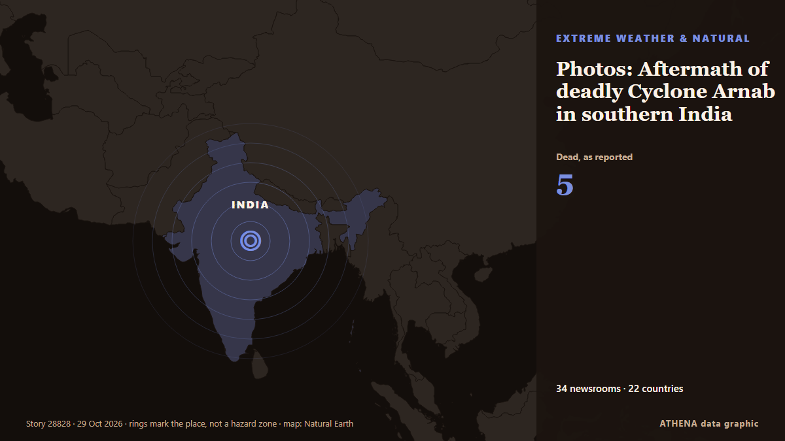

Photos: Aftermath of deadly Cyclone Arnab in southern India

IMD issues red alerts for seven of the 28 districts in Andhra Pradesh for October 27. de The Hindu
Relayé de façon indépendante par 34 médias dans 22 pays depuis le 25 oct. ; premier à l'annoncer : The Hindu ; la couverture faiblit. ATHENA juge le risque accru (5.4/10), surtout en raison de la gravité des dommages décrits et de sa portée géographique et sectorielle. La confiance est de 89 % (élevée) : 34 médias indépendants le confirment, avec une fiabilité moyenne des sources de 74 %.
Pourquoi c'est important: Les évolutions de l'énergie et des ressources pèsent sur les prix des carburants et de l'électricité, la sécurité d'approvisionnement et les engagements climatiques.
Ce qui a changé : 11 nouveaux articles de 7 rédactions dans les 24 heures jusqu'au 29 oct..
Premier titre : India to evacuate thousands as Cyclone Arnab nears eastern coast
Les titres sont affichés en anglais, tels que publiés.
En un coup d'œil
Sélectionné, noté et rédigé par la méthodologie publiée d'ATHENA. Aucun rédacteur n'intervient sur un événement en particulier. Comment il est produit ›
| 25 Oct 06:31 UTC | 1 |
|---|---|
| 25 Oct 12:31 UTC | 1 |
| 25 Oct 18:31 UTC | 0 |
| 26 Oct 00:31 UTC | 3 |
| 26 Oct 06:31 UTC | 7 |
| 26 Oct 12:31 UTC | 2 |
| 26 Oct 18:31 UTC | 0 |
| 27 Oct 00:31 UTC | 8 |
| 27 Oct 06:31 UTC | 11 |
| 27 Oct 12:31 UTC | 10 |
| 27 Oct 18:31 UTC | 3 |
| 28 Oct 00:31 UTC | 16 |
| 28 Oct 06:31 UTC | 14 |
| 28 Oct 12:31 UTC | 7 |
| 28 Oct 18:31 UTC | 0 |
| 29 Oct 00:31 UTC | 4 |
| 29 Oct 06:31 UTC | 4 |
| 29 Oct 12:31 UTC | 1 |
| 25 Oct 06:35 UTC | 3.9 |
|---|---|
| 25 Oct 13:21 UTC | 4.7 |
| 26 Oct 13:24 UTC | 5.1 |
| 27 Oct 11:22 UTC | 6.1 |
| 27 Oct 11:26 UTC | 5.6 |
| 27 Oct 15:53 UTC | 6.0 |
| 28 Oct 01:22 UTC | 5.4 |
| 29 Oct 03:31 UTC | 5.5 |
| 29 Oct 17:56 UTC | 5.4 |
Pourquoi ces chiffres
Importance
Risque
Confiance
La couverture : qui l'a annoncé, et quand
titre tel que publié · ouvre l'original- The Hindu · Inde · IndiaCyclone to cross Andhra coast on October 28; people in low-lying areas from Bapatla to Vizianagaram to be evacuated
- The Hindu · Inde · IndiaNaidu puts officials on high alert as cyclone nears Andhra Pradesh coast
- The Hindu · Inde · IndiaA.P., Odisha on alert as cyclone ‘Arnab’ nears land | Highlights
- Indian Express · Inde · IndiaCyclone Arnab to hit Andhra Pradesh coast on Wednesday, says IMD
- NDTV · Inde · IndiaCyclone Arnab Intensifies Over Bay Of Bengal, Andhra Pradesh On High Alert
- Business Recorder · PakistanIndia to evacuate thousands as Cyclone Arnab nears eastern coast
- The Kathmandu Post · Népal · NepalIndia to evacuate thousands as Cyclone Arnab nears eastern coast
- The Hindu · Inde · IndiaCyclone Arnab threatens Andhra’s municipal polls; SEC hopes to hold them on schedule
- The Daily Star — page reader · BangladeshCyclone Arnab forms over Bay, to cross India on Wednesday as very severe storm
- Hindustan Times · Inde · IndiaSatellite image shows Cyclone Arnab moving towards Andhra as storm intensifies over Bay of Bengal ahead of October 28 landfall
- Indian Express · Inde · IndiaCyclone Arnab: West Bengal to receive heavy rainfall from tomorrow
- Hindustan Times · Inde · IndiaCyclone Arnab to make landfall on October 28 in Andhra Pradesh, evacuation of 5.7 lakh people to start soon
- The Hindu · Inde · IndiaCyclone Arnab threat: Naidu orders evacuations, puts Andhra Pradesh on high alert
- Hindustan Times · Inde · IndiaMapping Cyclone Arnab’s trail: From Andhra to UP, IMD warns of heavy rain till Oct 30
- The Hindu · Inde · IndiaCyclone ‘Arnab’ hurtling towards Andhra Pradesh coast
- Hindustan Times · Inde · IndiaCyclonic storm Arnab LIVE: Cyclone's landfall off Andhra coast to continue for next 3 hours; brings strong rains, winds
- Indian Express · Inde · IndiaCyclone Arnab: When will it make landfall, which areas are on alert?
- Hindustan Times · Inde · IndiaUP on alert as raging Cyclone Arnab likely to bring unseasonal rain to Lucknow
- Hindustan Times · Inde · IndiaAir India issues travel advisory as Cyclone Arnab threatens flights to Visakhapatnam, Vijayawada
- Free Malaysia Today · Malaisie · MalaysiaThousands evacuate India’s eastern coast ahead of Cyclone Arnab
- CNA (Channel NewsAsia) · Singapour · SingaporeThousands evacuate India's eastern coast ahead of Cyclone Arnab
- Oman Observer · OmanIndia orders evacuations as Cyclone Arnab looms
- Express Tribune · PakistanThousands evacuate India's eastern coast ahead of Cyclone Arnab
- Asharq Al-Awsat (English) · Arabie saoudite · Saudi ArabiaIndia Braces for Cyclone Arnab with Evacuations
- Times of India · Inde · IndiaWho named Cyclone Arnab and why? Where it will hit, states on alert & preparedness
- Al Jazeera English · QatarIndia evacuates tens of thousands as ‘very severe’ Cyclone Arnab nears
- The Hindu · Inde · IndiaCyclone ‘Arnab’: Andhra, Odisha step up precautionary measures ahead of landfall
- Indian Express · Inde · IndiaCyclone Arnab landfall likely during tomorrow forenoon; north Andhra on alert
- The New York Times (World) · États-Unis · United StatesIndia Evacuates Tens of Thousands as Cyclone Arnab Approaches
- Indian Express · Inde · IndiaCyclone Arnab Update: Indian Railways issues travel advisory for passengers
- The Hindu · Inde · IndiaSCR cancels daily express trains towards Visakhapatnam as Cyclone Arnab intensifies
- Oman Observer · OmanIndia orders evacuations as cyclone looms
- ABC News (International) · États-Unis · United StatesIndia evacuates tens of thousands as Cyclone Arnab nears eastern coast
- NDTV · Inde · IndiaCyclone Arnab Nears Andhra Coast, Red Alert Issued Ahead Of Landfall
- Al Jazeera English · QatarCyclone Arnab batters India’s east coast
- Xinhua (English) — page reader · Chine · ChinaCyclone Arnab to make landfall on India's eastern coast: IMD
- The Hindu · Inde · IndiaWatch: Cyclone Arnab: What Andhra Pradesh needs to know
- Hindustan Times · Inde · IndiaAndhra govt fully geared up for Cyclone Arnab, 84,000 evacuated to safer places: CM Naidu
- NDTV · Inde · IndiaCyclone Arnab Highlights: Cyclone Arnab Kills 5 In Andhra Pradesh, Weakens After Landfall
- News of Bahrain · Bahreïn · BahrainIndia Orders Mass Evacuations Ahead of Cyclone Arnab